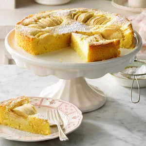

Apfelkuchen

Description
Embrace nostalgic flavors and homey feelings with apfelkuchen—an old-fashioned dessert recipe that's been deliciously prepped for more than 150 years.
Ingredients
- 5 Egg Yolks
- Green Apples
- Butter
- Sugar
- All-purpose flour
- Cornstarch
- Cream of tartar
- Baking powder
- Milk
- Confectioners sugar
Steps
- Preheat the oven to 350 degrees Farenheit
- Let the eggs stand at room temperature for 30 minutes
- Peel the apples
- Take one apple half and, starting 1/2 inch from one end, cut the apple lengthwise into 1/4-inch slices, leaving the slices attached at the top so they fan out slightly. Repeat with the other three apple halves.
- Place the softened butter and granulated sugar in a large mixing bowl. Use a hand mixer or stand mixer to cream them until light and fluffy. This will take some time—five to seven minutes on medium-high speed.
- After creaming, beat in the room-temperature egg yolks one at a time. Make sure you fully incorporate each yolk before adding the next.
- Grab your sifter and sift together the flour, cornstarch, cream of tartar, baking powder and salt. Once you’re done sifting, sift again. Sifting may seem like a pain, but don’t skip it here. It’ll help give the cake the right chewy texture.
- Slowly add the flour mixture into the creamed mixture. Beat until just combined, then add the milk.
- This German apple cake batter is thick! Don’t be alarmed if it doesn’t resemble a typical cake batter. You want the batter to be thick, rich and buttery.
- Grab your 9-inch springform pan and wrap the exterior with a sheet of foil. (Even leakproof pans aren’t foolproof!) Then spritz the interior of the pan with cooking spray. Even if the pan is nonstick, grease it to make removing the cake easier.
- Spread the cake batter into the pan in as even a layer as possible. Because the batter is thick, it may take a little finessing, but you’ll get it.
- Gently press the fanned apples, round side up, into the batter. Don’t press the apples too far into the batter—a quarter inch will do.
- Bake the cake until a toothpick inserted in the center comes out with moist crumbs, 45 to 55 minutes.
- Remove the apfelkuchen from the oven and let it cool at room temperature on a wire rack. After 10 minutes, run a knife around the inside edge of the cake pan and remove the foil. Let the cake cool at room temp for another hour before removing the springform collar.
- For a finishing touch, dust on confectioners’ sugar to make everything look more delicious and polished. Then, slice with a sharp knife and serve!